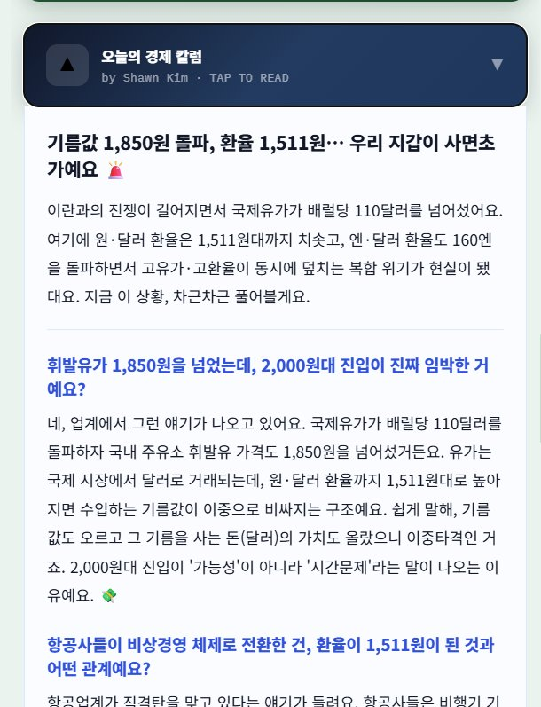
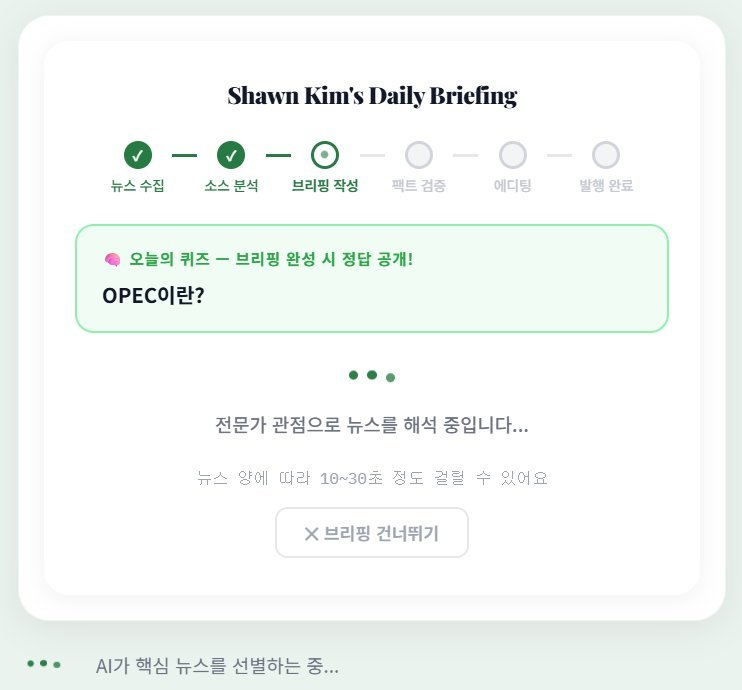
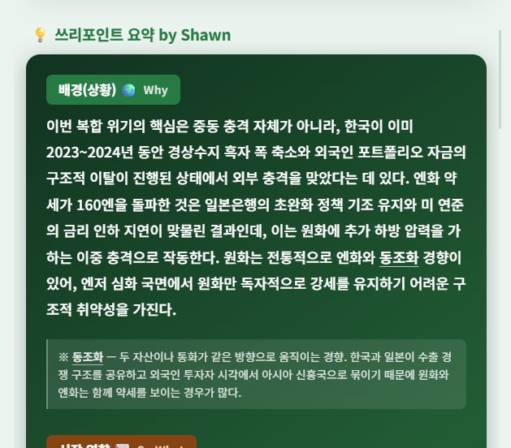
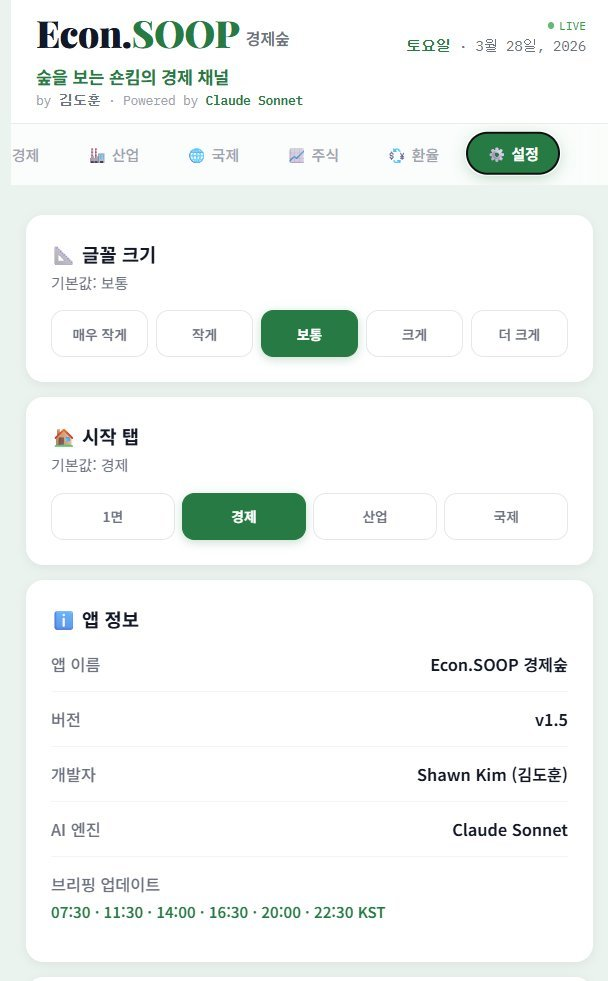

VIVA Economy은 이런 앱입니다
"나무가 아닌 숲을 보라" — 매일 쏟아지는 경제 뉴스를 AI가 핵심만 추려 3줄로 브리핑해주는 서비스입니다.
AI 4포인트 브리핑
경제/산업/국제 뉴스를 AI가 핵심 이슈 · 시장 흐름 · 투자 포인트 · 인사이트 4가지로 분석합니다. 각 항목에 용어 각주(어려운 단어 설명)가 자동으로 붙습니다. ※ Phase 2에서 3줄 → 4포인트로 확장
쓰리포인트 인사이트
배경(왜 이런 일이?) / 시장 영향(그래서 어떻게?) / 주목할 점(앞으로는?) — 한눈에 시장 맥락을 파악할 수 있습니다.
매일 아침 자동 생성
매일 07:00 KST — Vercel Cron이 자동으로 브리핑을 생성해 Firebase에 저장합니다. 사용자가 앱을 열면 이미 만들어진 브리핑이 즉시 전달됩니다. ※ Phase 3에서 하루 2회 → 1회, localStorage → Firebase로 전환
오늘의 칼럼
AI가 오늘의 핵심 이슈를 쉽고 재미있는 글로 자동 생성합니다. 사용자가 누를 때만 작동하여 비용을 아낍니다.

어떻게 발전해왔나 (Phase별 변화 기록)
처음엔 단순한 뉴스 요약 앱이었습니다. 문제를 만날 때마다 고치고, 아이디어가 생길 때마다 더했습니다. 각 단계를 클릭하면 무엇이 바뀌었는지 볼 수 있습니다.
가장 중요한 첫 목표는 단 하나였습니다. 뉴스를 가져와서 AI에게 요약시키고 화면에 보여주는 것. 이 사이클이 한 번이라도 작동하면 나머지는 다듬을 수 있었습니다.
하지만 작동하자마자 문제들이 생겼습니다. 테스트할 때마다 AI 비용이 나가고, 뉴스를 한꺼번에 요청하면 네이버가 차단하고, 같은 데이터를 매번 새로 가져오는 구조였습니다. 이 세 가지를 하나씩 해결하며 기초를 완성했습니다.
비용을 아끼려고 가장 저렴한 AI 모델(Haiku)을 썼는데, 금리가 올랐다는 뉴스를 "내렸다"고 요약하는 사고가 발생했습니다. 경제 뉴스에서 방향이 틀리면 치명적입니다. 즉시 Sonnet으로 교체하고, 콘텐츠도 더 풍부하게 만들었습니다.
기존 구조의 가장 큰 문제는 "처음 접속한 사람은 30초를 기다려야 한다"는 것이었습니다. Firebase(구글 클라우드 데이터베이스)를 도입해 브리핑을 미리 만들어두고, 누가 접속하든 즉시 전달하는 구조로 바꿨습니다. 이와 함께 브랜드도 새로 잡았습니다.
뉴스 브리핑만으로는 부족했습니다. 실시간 시장 가격, AI가 먼저 달아주는 댓글, 뉴스룸 팀까지 — 서비스의 폭을 넓혔습니다.
새 기능 대신 기존 것들을 더 잘 다듬는 단계였습니다. 겉으로는 별로 안 바뀐 것 같지만, 안으로는 더 안정적이고 깔끔해졌습니다.
Phase 6 — 진행 중
소셜 로그인(Google · 카카오), 구독 · 결제, PWA 푸시 알림. 앱은 계속 발전 중입니다.
왜 AI API는 비용이 드는 걸까?
VIVA Economy은 AI가 뉴스를 읽고 요약하는 앱입니다. 그런데 AI를 쓸 때마다 비용이 발생합니다. 왜 그럴까요?
AI API란?
API(에이피아이)란 프로그램끼리 서로 대화하는 통로입니다. VIVA Economy이 Claude에게 "이 뉴스 요약해줘"라고 요청을 보내면, Claude가 분석 결과를 돌려주는 방식이죠. 이때 AI가 글자를 읽고 생성할 때마다 토큰(글자 단위)을 사용하고, 그 토큰만큼 비용이 발생합니다. 마치 전화 통화료처럼, 오래 쓸수록 요금이 올라가는 구조입니다.
Claude 모델별 쓰임새 — 왜 여러 모델이 필요한가?
AI 모델도 등급이 있습니다. 비싼 모델일수록 똑똑하고 정확하지만, 느리고 비용이 높습니다. VIVA Economy에서는 상황에 맞는 모델을 골라 쓰는 것이 핵심 전략입니다.
| Opus (최상위) | Sonnet (중간) | Haiku (경량) | |
|---|---|---|---|
| VIVA Economy에서 어디에 쓰나? | 개발자(Shawn)와 대화하며 코드 작성 | 앱 안에서 뉴스 요약, 칼럼 자동 생성 | 처음에 썼지만 오류가 많아서 교체함 |
| 파라미터 규모 | 가장 큼 (수천억 개) | 중간 규모 | 가장 작음 |
| 컨텍스트 윈도우 (한번에 읽을 수 있는 양) | 200K 토큰 | 200K 토큰 | 200K 토큰 |
| 입력 비용 (100만 토큰 기준) | $15 | $3 | $0.25 |
| 출력 비용 (100만 토큰 기준) | $75 | $15 | $1.25 |
| 속도 | 느림 | 보통 | 빠름 |
| 정확도 | 매우 높음 | 높음 | 상대적으로 낮음 |
| 할루시네이션 (AI가 사실이 아닌 걸 만들어내는 현상) | 매우 낮음 | 낮음 | 상대적으로 높음 |
왜 큰 모델일수록 비용이 더 높을까?
파라미터가 많을수록 연산이 많다
AI 모델의 파라미터는 사람 뇌의 시냅스(신경 연결)와 비슷합니다. Opus처럼 파라미터가 수천억 개인 모델은, 글자 하나를 생성할 때마다 그 수천억 개의 연결을 모두 계산합니다. 마치 간단한 질문에도 수천 명의 전문가가 회의를 하는 것과 같죠. 그래서 같은 질문이라도 큰 모델은 더 많은 서버 자원(GPU)을 사용하고, 그만큼 비용이 올라갑니다. 또한 똑똑한 모델일수록 더 정교하고 상세한 답변을 만들어내기 때문에, 출력 토큰 수 자체도 늘어나는 경향이 있습니다.
VIVA Economy의 선택
VIVA Economy 앱 안에서는 비용과 품질의 균형이 좋은 Sonnet을 사용합니다. 개발할 때는 정확도가 높은 Opus로 대화하며 코드를 작성합니다. 처음에 비용을 아끼려고 썼던 Haiku는 뉴스 내용을 정반대로 요약하는 오류(할루시네이션)가 발생해서 교체했습니다.
개발 배경 (왜 VIVA Economy을 만들었는가?)
🚨 이런 문제가 있었습니다
파편화된 정보
경제 뉴스가 수십 개 매체에 흩어져 있습니다. 중요한 뉴스를 찾으려면 여러 사이트를 돌아다녀야 하고, 정작 핵심이 뭔지 파악하기 어렵습니다.
알고리즘의 편향
뉴스 앱의 추천 기능은 내 관심사만 보여줍니다. 좋아하는 것만 계속 추천하니, 진짜 중요한 정보는 놓치게 됩니다.
시간 부족
바쁜 일상 속에서 경제 뉴스를 하나하나 읽을 시간이 없습니다. 핵심만 빠르게 파악할 수 있는 방법이 필요했습니다.
✅ VIVA Economy의 해결 방법
여러 매체의 뉴스를 자동으로 수집해서, 앱 하나로 경제/산업/국제 뉴스를 한번에 볼 수 있게 만들었습니다.
추천 알고리즘 대신 AI가 "오늘 진짜 중요한 뉴스"를 골라줍니다. 내 취향이 아닌, 시장에서 중요한 것 위주로.
앱을 열면 AI가 3줄로 요약해둔 브리핑이 바로 보입니다. 배경과 전망까지 한눈에 파악 가능합니다.
출발점이 된 생각
"AI가 뉴스를 자동으로 수집하고 분석하면, 인터넷을 오래 떠돌지 않아도 1분 안에 오늘의 핵심 정보를 파악할 수 있지 않을까?" — 이 아이디어를 바이브코딩(AI와 대화하며 코딩하는 방식)으로 직접 만들어보기로 했습니다.
앱을 열면 어떤 일이 벌어지나?
사용자 눈에는 3줄 브리핑이 보이지만, 뒤에서는 이런 과정이 진행됩니다.
뉴스 수집 — Naver API
키워드별로 네이버 뉴스에 요청을 보냅니다. 뉴스 제목 18개를 가져오되, 3개씩 나눠서 0.25초 간격으로 요청합니다. 한꺼번에 너무 많이 요청하면 "요청 과다" 오류가 나기 때문입니다.
1차 AI 호출 — 3줄 브리핑 생성
수집된 뉴스 제목 + 내용 앞부분(100글자)을 Claude Sonnet에게 보냅니다. AI가 핵심 3줄 요약 + 어려운 용어 설명을 만들면, 곧바로 화면에 보여줍니다. 사용자는 이 단계에서 바로 브리핑을 볼 수 있습니다.
2차 AI 호출 — 쓰리포인트 인사이트 (뒤에서 처리)
1차 결과를 바탕으로 배경(왜?) / 시장 영향(그래서?) / 주목할 점(앞으로?) 분석을 생성합니다. 이 과정은 사용자가 브리핑을 읽는 동안 뒤에서 진행되어 기다리는 느낌을 줄입니다.
저장 — 다음에 다시 쓸 수 있도록
결과를 브라우저 저장소(localStorage)에 보관합니다. 다음 갱신 시간까지 저장된 내용을 재활용하여 불필요한 AI 호출(= 비용)을 차단합니다.


핵심 설계 원칙: 체감 속도 최우선
1차 호출이 끝나면 즉시 화면에 보여주고, 2차는 뒤에서 처리합니다. 사용자가 "느리다"고 느끼지 않도록 하는 것이 가장 중요한 설계 원칙입니다.
기술적 도전과 해결 과정
VIVA Economy을 만들면서 맞닥뜨린 기술적 문제들, 그리고 하나씩 해결해온 과정입니다.
문제 1 로딩 시간이 너무 길다
AI가 뉴스를 분석하려면 최소 10~30초가 걸립니다. 앱을 열었는데 아무것도 안 보이면 사용자는 떠나버립니다.
🔧 시도한 해결 방법들:
① 순차적 로딩 도입: 1차 AI 호출(3줄 브리핑)이 끝나면 바로 보여주고, 2차(쓰리포인트)는 뒤에서 처리. 사용자가 기다리는 느낌을 크게 줄였습니다.
② 프롬프트 축소: AI에게 보내는 지시문을 최대한 짧게 다듬었습니다. 글자 수가 줄면 처리 시간도 줄어듭니다.
③ 6단계 로딩 UX: 실제로는 AI가 처리 중이지만, 화면에는 "뉴스 수집 → 소스 분석 → 브리핑 작성..." 식으로 진행 표시를 나눠 보여줍니다. 대기 중에 경제 퀴즈도 보여줘서 지루함을 줄였습니다.
④ Sonnet 모델 사용: 가장 빠른 Haiku를 쓰면 좋겠지만 정확도가 떨어져서, 속도와 품질의 균형이 좋은 Sonnet을 선택했습니다.
⚠️ 아직 한계점: AI 호출 자체의 시간(10~30초)은 줄이기 어렵습니다. 더 빠른 모델이 나오거나, 캐시를 더 적극 활용하는 방법을 계속 연구 중입니다.
문제 2 AI가 뉴스를 거꾸로 요약한다 (할루시네이션)
할루시네이션이란 AI가 사실이 아닌 내용을 마치 사실인 것처럼 만들어내는 현상입니다. 저렴한 모델(Haiku)을 쓸 때 "A기업 주가 상승"이라는 뉴스를 "A기업 주가 하락"으로 요약하는 일이 실제로 발생했습니다.
🔧 해결 과정:
① Haiku → Sonnet으로 교체: 비용이 올라가지만, 정확도가 크게 개선되었습니다.
② 뉴스 내용을 더 많이 전달: 제목만 보내던 것을 제목 + 설명 앞 100글자까지 함께 보내도록 변경했습니다.
③ 프롬프트에 검증 지시 추가: "제공된 뉴스에만 근거하라", "추측하지 마라" 같은 지시를 강화했습니다.
⚠️ 아직 한계점: 완전히 없앨 수는 없어서 지속적으로 모니터링하고 있습니다.
문제 3 개발할 때마다 AI 비용이 나간다
글자 색깔 하나 바꾸는 UI 작업에도, 테스트를 위해 앱을 실행하면 AI가 호출되어 비용이 발생합니다. 실제로 테스트 중 하루 만에 $2.38(약 3,500원)이 예상 외로 발생한 사건이 있었습니다.
🔧 해결: DEV MODE 도입
URL 뒤에 ?dev=true를 붙이면 AI를 호출하지 않고 미리 만들어둔 가짜 데이터(더미 데이터)로 작동합니다. 화면은 실제와 똑같이 보이지만 비용은 0원입니다. 이후로 UI 작업은 무조건 DEV MODE에서 먼저 확인합니다.
전체 기술 구조
4개 도구가 각자의 역할을 하며 연결됩니다. 쉽게 말하면, 개발자가 코드를 GitHub에 올리면 Vercel이 자동으로 전 세계에 배포하고, 사용자가 접속하면 네이버에서 뉴스를, Claude에게서 분석을 받아오는 구조입니다.
왜 이 도구들을 선택했나?
GitHub — 코드의 안전망
GitHub(깃허브)는 코드를 안전하게 보관하는 클라우드 저장소입니다. 컴퓨터가 고장나도 코드는 안전하고, 모든 변경 이력이 기록되어 문제 시 이전 버전으로 되돌릴 수 있습니다. 가장 중요한 건 — 코드를 올리면(Push) Vercel이 자동으로 배포한다는 점입니다.
Vercel — 서버 없이 서비스 운영
Vercel(버셀)은 웹사이트를 전 세계에 자동으로 배포해주는 서비스입니다. 서버를 직접 관리하지 않아도 되어, 1인 개발자에게 매우 유용합니다.
🔧 서버리스 함수
서버 없이 서버 역할을 하는 기능입니다. /api/ 폴더에 파일을 넣으면 자동으로 작동합니다. 별도 서버 관리가 필요 없습니다.
🚀 자동 배포
GitHub에 코드를 올리면 10초 내에 전 세계 사용자가 접속할 수 있게 됩니다. 도메인이나 보안 인증서 설정이 전혀 필요 없습니다.
⏱ 60초 타임아웃
AI에게 뉴스 분석을 요청하면 시간이 꽤 걸립니다. 기본 설정으로는 시간 초과(타임아웃) 오류가 나서, 제한 시간을 60초로 늘려두었습니다.
🔐 환경 변수
API 키(비밀번호 같은 것)를 코드에 직접 쓰면 위험합니다. Vercel 설정 화면에서 안전하게 보관하고 관리합니다.
Claude vs Google AI Studio
VIVA Economy을 만들면서 두 AI 도구를 모두 사용해본 경험을 바탕으로 비교합니다.
Claude (Anthropic)
- • 대화형 개발에 최적화 — 이전 대화를 기억하며 코드 수정 가능
- • 코드 품질이 매우 우수 — 복잡한 로직이나 오류 해결에 강함
- • Artifacts — 코드 결과물을 대화 중 미리 볼 수 있음
- • 프로젝트 기능 — 파일을 올리고 맥락을 이어감
- • 한국어 이해도가 높음
- • Pro 구독 월 $20 필요 (무료는 사용량 제한)
- • 상위 모델(Opus) 사용량이 빨리 소진됨
- • 대화가 길어지면 앞부분 내용을 놓칠 수 있음
Google AI Studio (Gemini)
- • 넉넉한 무료 사용량 — 부담 없이 시작 가능
- • 사용량 소진이 비교적 느림
- • Google 서비스(스프레드시트, 드라이브 등)와 연동
- • 이미지, 영상, 오디오도 입력 가능
- • Gemini 2.5 Pro의 코드 품질 개선
- • 대화형 개발 흐름이 Claude만큼 자연스럽지 않음
- • 코드 미리보기 기능 부재
- • 복잡한 코드 설계에서 Claude보다 약함
VIVA Economy에서의 실전 활용법
| 상황 | 선택 | 이유 |
|---|---|---|
| 복잡한 코드 설계 | Claude Opus | 깊은 대화, 높은 코드 품질 |
| 일상적인 코드 수정 | Claude Sonnet | 비용 대비 충분한 품질 |
| Claude 사용량 소진 시 | Google AI Studio | 무료로 전환하여 작업 지속 |
| 간단한 질문 | 어떤 것이든 | 도구 차이가 크지 않은 영역 |
결론: 하나만 고집하지 않는다
Claude는 "깊이 있는 개발 파트너", Google AI Studio는 "비용 효율적인 보조 도구"입니다. 상위 모델을 쓰면 사용량이 빠르게 소진되기 때문에, 상황에 따라 유연하게 번갈아 쓰는 것이 실전 전략입니다.
9개의 서버리스 함수
처음엔 4개로 시작했지만, 기능이 늘면서 지금은 9개입니다. 서버 없이 작동하는 프로그램 조각들이 각자 역할을 맡아 돌아갑니다. ※ Phase 1(4개) → Phase 4(9개)로 확장
| 파일 | 역할 | 연결된 서비스 | 세부 사항 |
|---|---|---|---|
| api/generate.js | 브리핑 전체 생성 | C Claude Sonnet | Vercel Cron 07:00 KST 자동 실행 → Firebase 저장 Phase 3 추가 |
| api/cached.js | 저장된 브리핑 전달 | F Firebase | Firestore에서 꺼내 사용자에게 즉시 전달 Phase 3 추가 |
| api/news.js | 뉴스 수집 | N Naver 뉴스 | 키워드별 검색 → 뉴스 제목과 요약 반환 |
| api/briefing.js | 온디맨드 브리핑 | C Claude Sonnet | 캐시 없을 때 직접 생성 (초기 방식 유지) |
| api/insight.js | 쓰리포인트 인사이트 | C Claude Sonnet | 배경 / 시장 영향 / 주목할 점 분석 |
| api/column.js | 칼럼 생성 | C Claude Sonnet | 쉬운 말로 풀어 쓴 칼럼. 누를 때만 호출 |
| api/sparkline.js | 마켓 데이터 | Y Yahoo Finance | 환율·주식·코인 시세 + 스파크라인 Phase 4 추가 |
| api/ogimage.js | 썸네일 이미지 | OG Open Graph | 뉴스 기사 대표 이미지 추출 Phase 4 추가 |
| api/archive.js | 과거 브리핑 조회 | F Firebase | 날짜별 과거 브리핑 아카이브 Phase 4 추가 |
AI에게 보내는 것 vs 받는 것
📤 보내는 것 (입력)
- 뉴스 제목 18개
- 각 뉴스의 요약 (앞 100글자)
- 어떤 분야인지 (경제/산업/국제)
- 어떤 형식으로 답해달라는 지시문
- "제공된 뉴스에만 근거하라" 검증 지시
📥 받는 것 (출력)
- 핵심 이슈 / 시장 흐름 / 투자 포인트 3줄
- 어려운 용어 설명 (※ 형식의 각주)
- 배경(왜?) / 시장 영향(그래서?) / 주목할 점(앞으로?)
- 각 분석마다 인라인 용어 설명
나의 개발 워크플로우
매일 이 순서를 반복하며 앱을 개선합니다.
아이디어 / 버그 발견
"로딩 중에 퀴즈를 보여주면 어떨까?" "각주가 깨져서 나온다"
Claude에게 설명
현재 코드 + 문제/아이디어를 일상적인 말로 설명합니다. 계획을 먼저 공유하고, 합의한 후에만 작업합니다.
AI가 코드 생성/수정
Claude가 수정된 코드를 만들어줍니다. 내가 확인하고 이해한 뒤 반영합니다.
DEV MODE에서 테스트
?dev=true를 붙여서 AI 호출 없이 화면만 확인합니다. 비용은 0원.
Git Push → 자동 배포
git add -A && git commit -m "설명" && git push → 10초 후 실제 서비스에 반영.
실제 환경에서 최종 확인
econsoop.vercel.app에서 실제 AI를 호출하여 제대로 작동하는지 최종 확인합니다.
DEV MODE — 비용 없이 개발하기
URL 뒤에 ?dev=true를 붙이면 AI를 호출하지 않고 가짜 데이터(더미 데이터)로 작동합니다.
🚨 왜 필요한가?
- AI API는 호출할 때마다 비용 발생
- 글자 색 하나 바꾸는 작업에도 테스트하면 AI가 호출됨
- 실제 사건: 테스트 중 API 호출 누적 → 하루 만에 $2.38 예상 외 비용
- → 이후 DEV MODE 도입으로 개발 중 AI 비용 완전 차단
✅ 어떻게 작동하는가?
- 미리 만들어둔 가짜 데이터로 화면을 보여줌
- 빨간색 DEV 배너 + 워터마크가 표시됨
- 실제 화면과 100% 동일한 UI를 비용 없이 확인 가능
- 규칙: 실제 형식이 바뀌면 가짜 데이터도 반드시 함께 업데이트
캐시 & 스케줄 시스템
불필요한 AI 호출(= 비용)을 막으면서도 항상 최신 뉴스를 제공합니다. 캐시(Cache)란 한 번 받아온 데이터를 임시로 저장해뒀다가 재사용하는 방식입니다.
캐시 전략의 변화 Phase 1 → Phase 3
- • 접속 → AI 생성 → 내 기기에 저장
- • 하루 2회 갱신 (07:30 / 17:00)
- • 다른 기기 첫 접속 = 또 30초 대기
- • 07:00 KST Cron → 미리 생성 → 클라우드 저장
- • 하루 1회 자동 생성
- • 누구든 접속하면 즉시 전달 (~0.5초)
현재 캐시 작동 원리
매일 07:00 KST — Vercel Cron 자동 실행
사람 없이 서버가 자동으로 브리핑을 생성하고 Firebase에 저장합니다.
사용자 접속
Firebase에서 오늘 생성된 브리핑을 꺼내 즉시 전달합니다. 로딩 시간 0.5초 이내.
오늘 날짜 데이터가 없으면 직접 생성
드물게 Cron이 실패했을 때, 사용자 접속 시 직접 생성합니다. (기존 방식 폴백)
캐시 버전 관리 (현재 v151)
코드가 변경될 때마다 버전 번호(CACHE_VERSION)를 올려서, 이전에 저장된 오래된 데이터를 자동으로 삭제합니다. 사용자가 직접 캐시를 지울 필요가 없습니다.

개발하면서 느낀 점 (시행착오와 교훈)
인식 AI는 만능 비서가 아니라, 명령을 수행하는 도구
처음에는 AI가 내 마음을 다 알아줄 것 같았습니다. 하지만 실제로는 내가 정확하게 무엇을 원하는지 말해야 합니다. "알아서 해줘"라고 하면 엉뚱한 결과가 나옵니다. AI를 잘 "지시할 줄 아는 능력"이 결과물의 품질을 결정합니다.
비용 AI 서비스는 공짜가 아니다
AI 모델을 쓸 때마다 토큰(글자 수) 기반으로 비용이 발생합니다. 더 좋은 모델일수록 비싸고, 많이 쓸수록 요금이 올라갑니다. VIVA Economy에서는 DEV MODE, 캐시, 사용자가 탭할 때만 호출하는 방식 등으로 비용을 최소화하는 전략을 세웠습니다.
정확도 싼 모델은 사실을 뒤집을 수 있다
비용을 아끼려고 저렴한 모델(Haiku)을 썼더니, 뉴스 내용을 사실과 정반대로 요약하는 일이 발생했습니다. 경제 뉴스에서 방향을 틀리면 치명적입니다. 결국 Sonnet으로 교체하고, 검증 과정도 강화했습니다. 비용 절약과 정확도 사이에는 트레이드오프(하나를 얻으면 하나를 잃는 관계)가 있습니다.
스킬 코딩을 몰라도 되지만, 알면 10배 빨라진다
바이브코딩은 코딩을 몰라도 가능합니다. 하지만 글자 색깔 하나 바꾸는 것도, 코드를 모르면 AI에게 부탁하고 전체 과정을 거쳐야 합니다. 기초 코딩 지식이 있으면 간단한 수정은 직접 할 수 있어서 개발 속도가 비약적으로 빨라집니다.
원칙 일단 해보되, 의사결정권은 반드시 사람에게
바이브코딩의 힘은 "일단 해보는 것"에서 나옵니다. 완벽한 설계 없이도 AI와 대화하며 빠르게 결과물을 만들 수 있죠. 하지만 여기에 함정이 있습니다 — 똑똑한 AI일수록 자기가 옳다고 판단하면 확인 없이 실행하려는 경향이 있습니다. 특히 상위 모델(Opus)은 스스로 최선이라 생각하는 방향으로 코드를 쏟아냅니다. 그래서 반드시 필요한 규칙이 있습니다: "모든 변경은 나에게 먼저 확인하고, 합의한 뒤에 진행할 것." — 마치 결재를 받듯, 사람이 최종 의사결정권자여야 합니다. AI는 제안하고, 사람이 결정합니다.
전략 비용이 드는 작업은 반드시 사전 승인
실제로 API 구조를 변경하다가 예상치 못한 비용이 발생한 적이 있습니다. 그 이후로 "비용에 영향을 주는 모든 변경은 반드시 사전에 논의하고 승인받는다"는 규칙을 세웠습니다. 이 규칙 하나가 불필요한 지출을 막아줍니다.
Google AI Studio와의 병행
Claude 사용량이 소진되면 Google AI Studio(Gemini)를 보조로 활용합니다. 무료로 쓸 수 있는 양이 넉넉해서 비용 부담이 적습니다. 복잡한 개발은 Claude, 간단한 작업은 Google — 상황에 따라 유연하게 선택합니다.
VIVA Economy의 현재와 미래
📊 현재 상태
- 프론트엔드: HTML/CSS/JS 단일 파일
- 호스팅: Vercel (서버 없이 운영)
- AI: Claude Sonnet으로 뉴스 요약
- 뉴스: 네이버 뉴스 API로 자동 수집
- 8개 탭, 9개 서버리스 함수, 하루 1회 자동 생성
- Firebase Firestore 서버사이드 캐시
- Unsplash 섹션 이미지, AI 자동 댓글
- 모바일에서 앱처럼 설치 가능 (PWA)
- 개발자 1명이 기획부터 운영까지 전담
🚀 앞으로의 계획
- 소셜 로그인 (Google · 카카오)
- 구독 & 결제 (토스페이먼츠)
- PWA 푸시 알림 (매일 07:00)
- 구독자 이메일 수집
- AI 브리핑 정확도 지속 개선